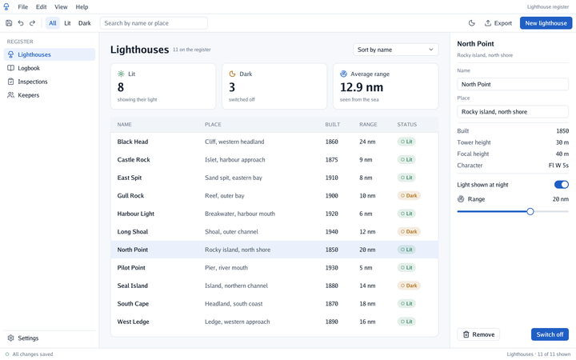

Package window opens a plain window with no 3D at all and runs the interface in it, painted on
the theme’s Background. The same program also runs in a web page and
on Android.

options := window.Options{Title: "Lighthouse register"}
options.MinWidth, options.MinHeight = 960, 560 // the smallest the layout still works at
options.RegisterFlags(flag.CommandLine) // -width, -height, -capture, -no-vsync, -dark, -continuous, -backend
flag.Parse()
window.Run(options, func(context *ui.Context) {
context.Label("Hello")
})
cmd/app is a complete example: a menu bar, a toolbar with filters and a search box, a navigation
list, summary cards, a table whose rows are Clickable boxes with Share columns, an inspector
with fields to rename a lighthouse and a status bar.
Built for WebAssembly (GOOS=js GOARCH=wasm), the same program runs in a web page: the window is
the page’s canvas, drawn through WebGL2 (in a web browser); built for Android, it is the
application’s activity (on Android).
| Option | Flag | What it does |
|---|---|---|
Title |
The window’s title (a page’s title in a browser) | |
Width, Height, MinWidth, MinHeight |
-width, -height |
The window’s size (1280 × 800 when 0), and the smallest the layout still works at |
Continuous |
-continuous |
Draws every frame, for an interface that animates all the time |
Backend |
-backend automatic\|metal\|opengl |
What draws the window (below) |
CapturePath |
-capture file.png |
Draws one frame to a picture, in a hidden window, and returns |
NoVsync |
-no-vsync |
Draws as fast as possible instead of waiting for the display |
Dark |
-dark |
Starts in the dark theme |
Scene |
A 3D scene behind the interface (below) | |
Canvas |
In a browser, the page’s canvas to draw in (web) | |
MaxFramesPerSecond, Hidden |
A cap on frames, and a function called when the program leaves the screen (Android) |
The window draws only when something happens: input, a resize, a frame a control asks for
(the caret’s next blink, a tooltip coming due, through input.State.RequestFrame), or
window.Wake(), which a program calls from another goroutine when its data changes there. A frame
that would look exactly like the one shown (the pointer moving over still parts, say) is not
drawn either: the window compares the draw list’s fingerprint with the last one. In
between it sleeps: the register uses no processor while idle, against about 14% of a core
drawing every frame. Options.Continuous (-continuous) draws every frame, for an interface that
animates all the time. Over a 3D view (viewer.Run) the scene keeps drawing every frame.
Measured in detail in performance and battery.
Options.Scene puts a 3D scene behind the interface: a function called at every step, with the
input the interface did not claim, that returns a scene and a camera (or nil for none). A drag on an
empty part of the screen turns the camera while a drag on a slider moves the slider.
On a phone, Context.Insets() says how much of each edge the system’s bars cover, and
Context.Size() gives the window’s size, so a layout can paint under the bars and choose itself by
the screen. The Android page has the rest of what a phone adds: the keyboard,
notifications, the clipboard, preferences, films and the wallpaper’s colours.
On macOS the window draws through Metal; elsewhere through OpenGL 4.1. Options.Backend
(-backend automatic|metal|opengl) chooses; if Metal cannot start, the window says so once and
uses OpenGL. Both paint the same quads from the same atlas, and their captures match within 1⁄255
per channel. Metal needs less: with the register idle, its memory is 66–70 MB against 93–102 MB
through OpenGL, and with a window that changes every frame it used about a third less processor,
GPU and memory (measurements).
The window has no depth or stencil buffer, which flat drawing never uses. Most of what the system then counts for the program is the window’s own buffers, which grow with its size; the program itself (fonts, the atlas, its data) is about 25 MB.